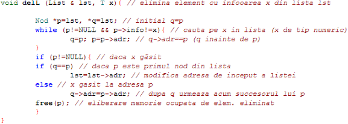
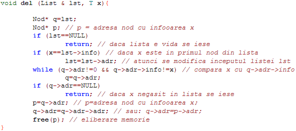

Stergere
Eliminarea unui nod cu informatia data x dintr-o lista necesita gasirea nodului p care contine informatia x, urmata de modificarea adresei nodului anterior lui p. Intr-o lista dublu înlantuita fiecare nod contine si adresa nodului precedent, dar pentru o lista simplu înlantuita trebuie sa retinem adresa q a nodului precedent lui p, în timpul operatiei de cautare a nodului p cu informatia x. Avem de ales între doua variante:
- sa folosim doi pointeri q si p astfel ca q->adr=p ( q este urmat de p); sa folosim un singur pointer q si sa comparam pe x cu q->adr->info (cu informatia din nodul urmator lui q).
Functie de eliminare nod dintr-o lista înlantuita, folosind doi pointeri:

Functie de eliminare nod dintr-o lista înlantuita, folosind un singur pointer:
